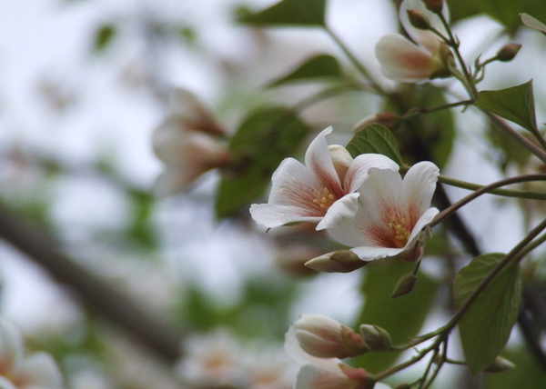
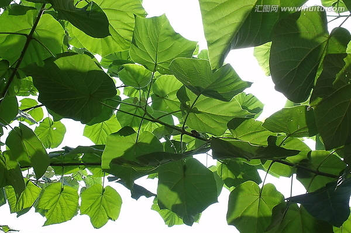
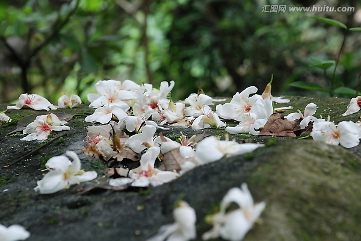

梧桐花香
#1 梧桐花香作者：悟石 发表时间：2013-5-17 22:17:38
“什么香味这么熟悉？”
走在电子西街，一阵花香从风中飘来，说不出的熟悉和亲切感涌上心头。
我一边走着一面四下张望，寻找着这花香的源头。
一棵藏在两栋单元楼之间的梧桐树映入眼帘，上面挂了满满的梧桐花。
“梧桐树！？”
我开始在脑海里寻找为什么会有那份熟悉和亲切的感觉，
原来，是童年。。。。。。

小时候，我家住在洛南山沟一个三线军工厂的家属院筒子楼里。
每两栋筒子楼之间种着几株梧桐，
不知道是什么时候栽种的，
印象中最粗的那棵要三四个小伙伴才能抱得住。
那株桐树很茂盛，每到夏天繁茂的叶子刚好遮住我家的窗子，
小伙伴们都喜欢在树荫下乘凉、嬉戏，
傍晚趴在桐树上数着数，捉迷藏；
秋天来了，瑟瑟的秋风把树叶一片片的吹落，
没有什么玩具的我们用树叶的根茎玩起了“拼老将”
不知道别的地方怎么叫，就是两个人用叶子的根茎互相拔拽，
只能拽着自己的叶子根茎，看谁的根茎最结实；
冬天，树干是我们的靶子，拿着雪球砸树干，
有几个坏小子跑到筒子楼三楼的过道上朝着树冠扔雪球，
树冠震动上面的积雪都掉落下来，
给大家的头上身上都弄的是积雪；
不过，我最喜欢的还是春天，
因为春天里的桐树会开花，
沁人心肺的花香，让我总觉得花里面肯定有糖，不然怎么会那么香，
曾经还试验着拔掉花蕊试着舔舐里面看是不是很甜，却好像不是想象中的滋味，
最后拔掉花瓣，剩下雌花的圆球子房，上面有一层绒毛覆盖，
放在指头上当小帽子戴，给手指头上画了各种表情戴帽子的娃娃，一起玩过家家。。。

记忆渐渐模糊，
想不起是谁偷了妈妈的针，绑在冰棍棒上对着桐树玩飞镖；
想不起是谁挑最大的桐树叶摘下当扇子；
想不起是谁被采梧桐花蜜的蜜蜂蛰了小手；
想不起是谁在学校组织的大扫除里，用梧桐叶玩起了“拼老将”被班主任点名批评；
想不起是谁拿皮筋用梧桐花子房当子弹打最早的真人CS。。。

原来小时候那棵梧桐树已经扎根生长在我的记忆里，
是这梧桐花香不小心打翻了我的记忆瓶。。。
［此帖子已被 悟石 在 2013-5-17 23:10:28 编辑过］
［ 冰雪笑醉 于 2013-5-18 21:47:27 时花20金币送鲜花一朵］
［ 冰雪笑醉 于 2013-5-18 21:47:27 时花20金币送鲜花一朵］
［ 冰雪笑醉 于 2013-5-18 21:47:27 时花20金币送鲜花一朵］
［ 冰雪笑醉 于 2013-5-18 21:47:27 时花20金币送鲜花一朵］
［ 冰雪笑醉 于 2013-5-18 21:47:27 时花20金币送鲜花一朵］
［ 冰雪笑醉 于 2013-5-18 21:47:27 时花20金币送鲜花一朵］
［ 冰雪笑醉 于 2013-5-18 21:47:27 时花20金币送鲜花一朵］
［ 冰雪笑醉 于 2013-5-18 21:47:27 时花20金币送鲜花一朵］
［ 冰雪笑醉 于 2013-5-18 21:47:27 时花20金币送鲜花一朵］
［ 冰雪笑醉 于 2013-5-18 21:47:27 时花20金币送鲜花一朵］
［ 冰雪笑醉 于 2013-5-18 21:47:27 时花20金币送鲜花一朵］
［ 冰雪笑醉 于 2013-5-18 21:47:27 时花20金币送鲜花一朵］
［ 冰雪笑醉 于 2013-5-18 21:47:27 时花20金币送鲜花一朵］
［ 冰雪笑醉 于 2013-5-18 21:47:27 时花20金币送鲜花一朵］
［ 冰雪笑醉 于 2013-5-18 21:47:27 时花20金币送鲜花一朵］
［ 冰雪笑醉 于 2013-5-18 21:47:27 时花20金币送鲜花一朵］
［ 冰雪笑醉 于 2013-5-18 21:47:27 时花20金币送鲜花一朵］
［ 冰雪笑醉 于 2013-5-18 21:47:27 时花20金币送鲜花一朵］
［ 冰雪笑醉 于 2013-5-18 21:47:27 时花20金币送鲜花一朵］
［ 冰雪笑醉 于 2013-5-18 21:47:27 时花20金币送鲜花一朵］
#2 Re:梧桐花香作者：梧桐风 发表时间：2013-5-17 22:24:31
梧桐来了。。。
好歹把图上传清楚啊。。。
#3 Re:梧桐花香作者：梧桐风 发表时间：2013-5-17 22:26:12
ShowPost.asp?ThreadID=3887请参照第二项#4 Re:梧桐花香作者：悟石 发表时间：2013-5-17 22:49:10
现在发帖没有按钮了,ubb代码忘记了...发个帖子不容易啊,编辑了好几遍#5 Re:梧桐花香作者：吉小鼠 发表时间：2013-5-18 0:17:32
喜欢~#6 Re:梧桐花香作者：吉小鼠 发表时间：2013-5-18 17:35:15
貌似昨天晚上梦见了这梧桐花…#7 Re:吉小鼠【==Re:梧桐花香==】作者：悟石 发表时间：2013-5-18 21:47:46
引用：
原文由 吉小鼠 发表于 2013-5-18 17:35:15 :
貌似昨天晚上梦见了这梧桐花…我的作品能让小鼠梦到，荣幸哇
#8 Re:梧桐花香作者：冰雪笑醉 发表时间：2013-5-18 21:48:32
听见音乐了，不就弄了个自动播放吗？貌似我看到过有人隐藏了播放器，也有音乐的 ，都不知道音乐从什么地方来的［ 厦门小天 于 2013-5-31 22:00:12 时花10000金币送鲜花500朵］
#9 Re:冰雪笑醉【==Re:梧桐花香==】作者：悟石 发表时间：2013-5-18 21:53:33
引用：播放器宽度或者高度设置成0就可以了
原文由 冰雪笑醉 发表于 2013-5-18 21:48:32 :
听见音乐了，不就弄了个自动播放吗？貌似我看到过有人隐藏了播放器，也有音乐的 ，都不知道音乐从什么地方来的
#10 Re:梧桐花香作者：微微一笑 发表时间：2013-6-11 14:34:58
我上学那阵校园的操场上三面都是梧桐树，长得很粗很大，天气不好的时候甚至觉得有点渗得慌。#11 Re:梧桐花香作者：釣鱼岛岛主 发表时间：2013-6-11 15:14:57
飞镖不错，一根针 一根棍 一张硬纸就可以做成飞镖，杀伤范围5-8米。